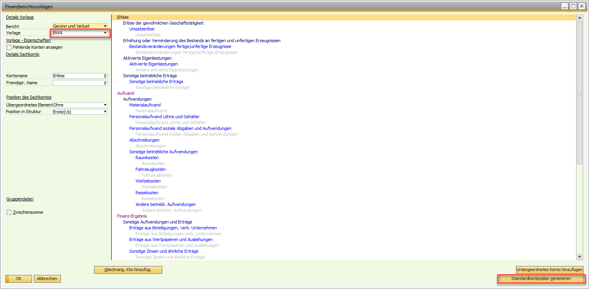

Reporting Extension Pack (Reporting)
Overview
The Versino Reporting Module is the central reporting system of the Financial Suite. It offers an extensive collection of pre-made Crystal Reports and works entirely in the background to provide you with the appropriate analyses. A key advantage is that the module automatically detects whether you are using a Microsoft SQL Server or SAP HANA database and loads the corresponding, performance-optimized reports.
The module starts asynchronously without blocking the SAP Business One interface and automatically detects your system language. Access to the reports: All reports can be found in the SAP Business One menu under Versino Financial Suite > Financial Suite Reports.
Main Features
The module offers two types of reports to cover different requirements:
Standard Reports
These reports can be started directly and offer quick evaluations. Filtering (e.g., by date) is done directly in the Crystal Reports Viewer.
- Cash Book: Shows all cash transactions chronologically with a running balance.
- G/L Account Statement: Detailed transaction lists for selected G/L accounts.
- Customer Open Items: Overview of unpaid receivables with aging analysis.
- Trial Balance (SuSa): Compact overview of all accounts.
- Top 10 Customers/Vendors: Ranking of the most important business partners.
- Payment Behavior: Analysis of customer payment behavior.
- BWA: Monthly business analysis report.
Mass Reports
These reports offer special filter dialogs before starting, to carry out targeted mass processing.
- Balance Confirmation: Creates separate confirmation letters for any number of customers for a selectable key date.
- Netting Reconciliations: Documents completed netting processes.
- Payment Advice: Creates detailed payment advices for a specific payment run.
Output Options
All reports can be directly displayed, printed, or exported to formats such as PDF, Excel, or Word. For mass reports, individual file names are automatically assigned (e.g., "BalanceConfirmation_[CustomerCode].pdf").
Application
Using a Standard Report (e.g., Account Statement)
- Navigate to Versino Financial Suite > Financial Suite Reports > G/L Account Statement.
- A filter dialog opens. Enter the desired time period, the G/L accounts, and the display type (B1 form or as an external Windows form).
- Click "OK". The report is generated.
- Use the viewer's export functions to save the report.
Using a Mass Report (e.g., Balance Confirmation)
- Select the Balance Confirmation report.
- Fill in the filter fields in the dialog that appears (e.g., key date, business partners).
- Start the report generation. The system automatically creates separate files for each selected customer.
Tips and Troubleshooting
Problem: A report is empty or shows no data.
Solution: Check your filter settings, especially the date range. Ensure that data actually exists in the database for the selected criteria.
Problem: The reports start slowly.
Solution: The very first time a report is started after opening SAP Business One, the initialization may take a moment. This is normal. Subsequent reports should load faster.
Problem: Performance with large amounts of data is slow.
Solution: The reports are already optimized for SQL and HANA. To further speed up the query with very large data volumes, restrict the filter criteria (e.g., a shorter date range) as much as possible.
Problem: Crystal Reports does not work or there is a database connection error.
Solution: Ensure that the Crystal Reports components for SAP Business One are installed correctly. Check your database connection and restart SAP Business One. If problems persist, contact your administrator.
Problem: BWA report does not load.
Solution: Ensure that the BWA financial report template has been created. You can find the menu under Financials > Financial Report Templates. If it does not exist, you can create it yourself (as shown in the picture). The standard chart of accounts can be loaded automatically via a button. If problems persist, contact your administrator.
